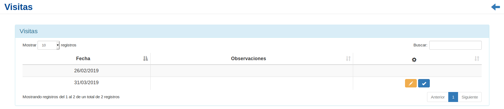
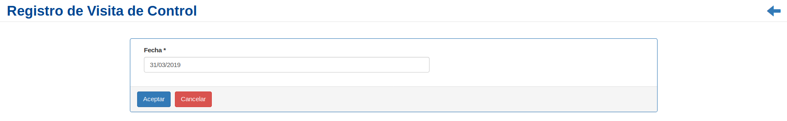
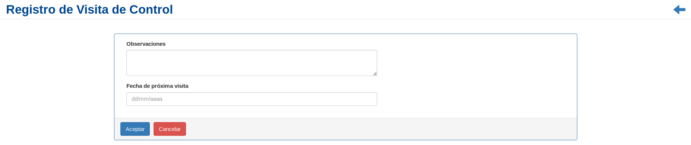

Visita Control de Plagas¶
Se presentará una pantalla que contendrá un listado con todas las visitas asociadas a un Control que se encuentren registrados en el sistema hasta la fecha.
Junto con el listado, se presentarán un conjunto de funcionalidades que permitirá manipular la visita del Control de Plagas.
Estas funcionalidades son:
Modificar Fecha Visita¶
Si el usuario desea modificar la fecha de un Control de Plagas, deberá seleccionar en la columna de acciones asociado al control y presionar el ícono
Modificar Fecha.A continuación, el sistema lo redirigirá a la siguiente pantalla. En esta parte, al usuario se le presentará un formulario y deberá ingresar los datos solicitados para Modificar la fecha de la visita del Control de Plagas.
Una vez completado el formulario, se volverá a la pantalla que contendrá el listado de visitas.
Registrar Visita de un Control de plagas¶
Si el usuario desea registrar la visita de un Control de Plagas, deberá seleccionar en la columna de acciones asociado al control y presionar el ícono
Registrar Visita.A continuación, el sistema lo redirigirá a la siguiente pantalla. En esta parte, al usuario se le presentará un formulario y deberá ingresar los datos solicitados para registrar la visita del Control de Plagas.
Una vez completado el formulario, se volverá a la pantalla que contendrá el listado de visitas.